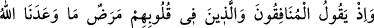
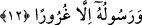
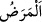

bizim kökümüzü kesmeden geri dönmeyeceğin konusuna gelince Allah seninle o iş
arasına girecek, iyi sonucu bize verecektir. Bir gün gelip sen göreceksin Lât, Uzzâ,
İs‘âf, Nâile ve Hubel’i kıracağım. Bunu da sana hatırlatacağım, ey Gâlib
oğulları’nın akılsız ve beyinsizi!”
Müslümanlar çalıştılar gayret ettiler hak yolunda nice sıkıntılara göğüs gerdiler.
Nihâyet Allah Teâlâ Mekke’nin fethini nasib etti. İslâm, İslâm beldeleri ve İslâm
toplumu genişledi.
12. Ve o zaman, münafıklar ile kalplerinde hastalık (îman zayıflığı) bulunanlar:
“Meğer Allah ve Rasûlü bize sadece kuru vaadlerde bulunmuş!” diyorlardı.
“Ve o zaman, münafıklar” iki yüzlüler “ile kalplerinde hastalık” îman zayıflığı
“bulunanlar: “Meğer” zafer ve dînin yücelmesi konusunda “Allah ve Rasûlü bize
sadece kuru vaadlerde bulunmuş.” diyorlardı.”
Âyette muzârî siygasının kullanılması, sözün ve durumun zihinlerde hazır ve canlı
tutulması içindir.
“Münâfıkla kalbinde hastalık olan arasındaki fark nedir?” diye sorarsan, şöyle cevap
veririm: Münafık bir şeyi şeksiz, şüphesiz yalanlayandır. Kalbinde hastalık olan
hakkında ise Allah Teâlâ şöyle buyurmuştur: “İnsanlardan kimi Allâh’a yalnız bir
yönden kulluk eder. Şöyle ki: Kendisine bir iyilik dokunursa buna pek memnun
olur, bir de musîbete uğrarsa çehresi değişir (dinden yüz çevirir).” (el-Hac, 22/11).
el-Es’iletü’l-müfhıme’de böyle geçmektedir.
Râğıb der ki: “__WORD__ (hastalık)” insanın kendisine mahsus mûtedil durumdan
çıkmasıdır. Hastalık cismî ve nefsî olmak üzere iki türlüdür. Nefsî olan cehâlet,
korkaklık, nifak ve benzeri kötü ahlâkla ilgili kötü hallerdir. Nifak, küfür ve benzeri
rezâletler, hastalığa benzetilmesinin sebebi şudur: Bunlar, ya tam tasarrufa mâni olan
hastalık gibi fazîletleri idrak etmeye mâni olduğu içindir. Yahut Allah Teâlâ’nın “Bu
dünyâ hayatı sadece bir eğlenceden, bir oyundan ibarettir. Ahiret yurduna gelince
işte asıl hayat odur.” (el-Ankebût, 29/64) âyetinde zikredilen uhrevî hayatı tahsil
etmeye mâni olduğu içindir. Ya da hasta bedenin zararlı şeylere meyletmesi gibi nefsin
bu şeylerle bozuk ve bayağı inançlara meylettiği içindir.
Münafıklar aslında “Rasûlullah” demediler, O’nu ancak ismiyle andılar. Fakat Allah
O’nu bu lâfızla zikretmiştir. Bu sözü söyleyenler, daha önce geçtiği gibi Muattib b.
Kuşeyr ve ona tâbi olanlardır.